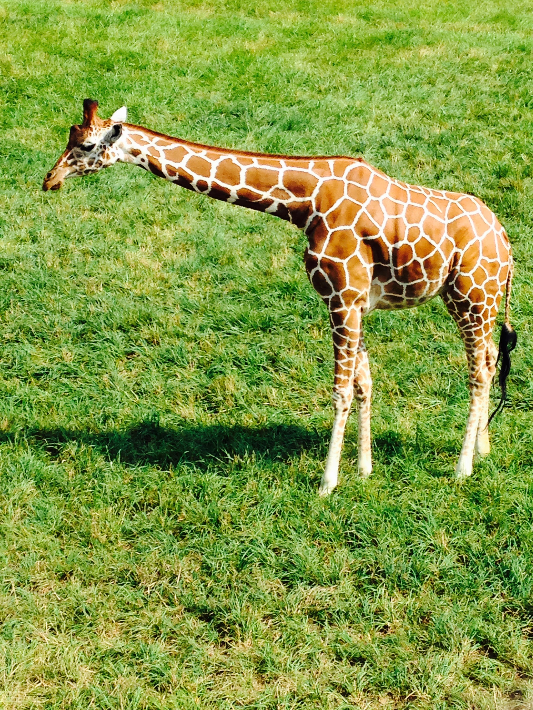

Observant #2 - Fort Wayne Children's Zoo

For almost every year of my life, I have gone to the Fort Wayne Children’s Zoo. It has become a tradition that I look forward to every year. When I was younger, my mother and I would have picnics and watch the animals. As I grew up, I started going every year, whether with my dad, mom, sister, cousins, friends, class field trips, and now my nieces and nephews. Throughout the years, the zoo has changed its look, expanded, and has attained more animals and attractions. During the summer months, when the zoo is open, I have always noticed families, with usually a lot of children. The parking lot is full, as parents apply sunscreen to their kids. Everyone is normally dressed in shorts and t-shirts, tennis shoes for walking, and typically hats and sunglasses. It is evident that the guests spend the whole day at the zoo, cherishing moments by taking lots of pictures.
Another observation is the general design of the park. The Fort Wayne Children’s Zoo offers brochures and billboards with maps. It is interesting to notice that there is a general flow of traffic through the zoo, starting at the African part, leading into the South American part, and finishing with the Australian and farm sections. Over the years, the zoo has updated their design to add new attractions, including the African parts, recreating the sidewalks using a reddish stone path to fit more with the general theme, and redoing the Australian section last year updating it with buildings with tin roofs. Another aspect I have noticed is the interactive design. In recent years, the zoo has added lots of interactivity attractions, such as a shark you can walk inside to take pictures, a surfboard to stand on for pictures, and a stingray petting zoo. The Fort Wayne’s Children’s Zoo has a special place in my life, and for years to come, I will continue to discover the design elements that make up the park.